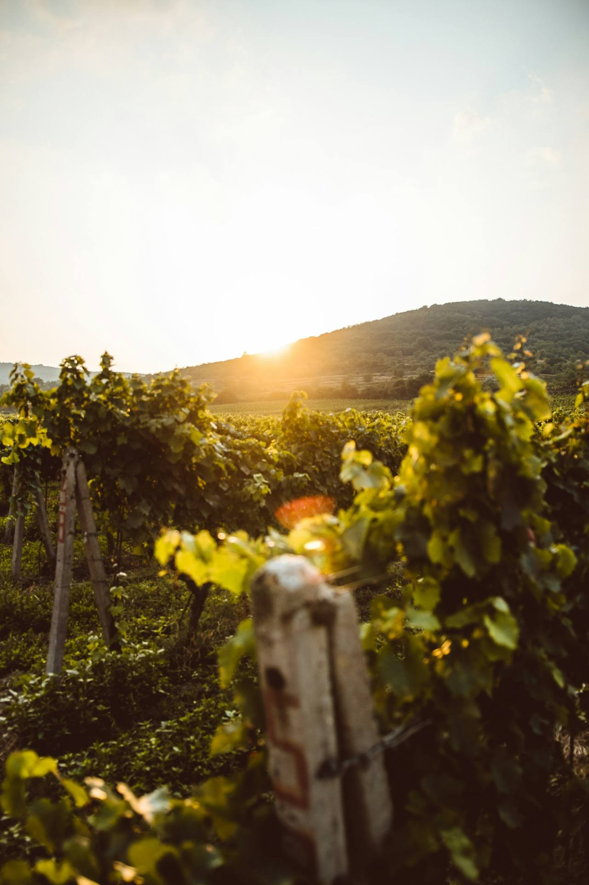
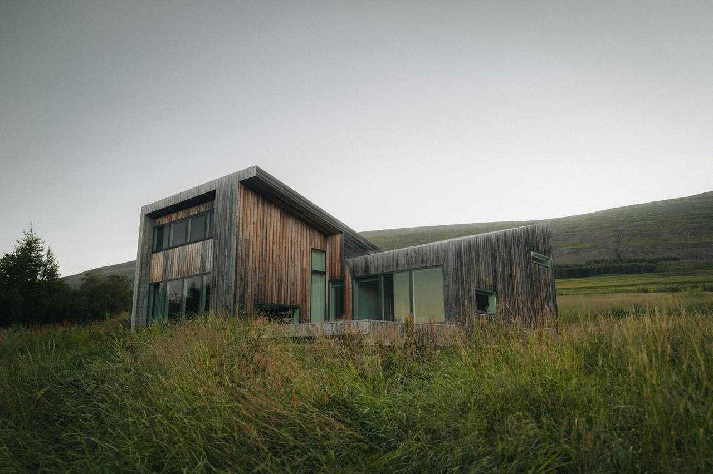

No. 02 · Note
Walking the ground
Before the first sketch, the site gets its say. Our first day on any land is spent without pencils.
Every commission starts with the same slightly awkward appointment. The client expects us to arrive with a roll of drawings and the confident air of people about to design something. Instead we arrive with boots, a thermos and an empty notebook, and we walk. Not the site tour, the one with property lines pointed out. The other one: we are there for the hours, not the acreage.
We stand where the kitchen will stand, at seven in the morning, and again at the hour the client says they will actually cook. We watch where the water goes when it rains hard, which takes patience and usually one fortunately ruined jacket per project. We find where the wind is born in the gully and what it does when it reaches the saddle. None of this is surveying. All of it is data.
The notebook that comes back from a first walk is unimpressive to look at: a smell, a neighbour's plum tree throwing shade at 4pm, the sound of the road being louder on the eastern corner, a line of writing that says only too cold here in June, ask why. Months later, when the plans begin, every strong move in them can be traced back to one of those pages. The house turns its back where the wind arrives. The window seat lands exactly where the plum tree's shade falls. Nothing is invented; everything is transcribed.
The ground is the first client, and it never likes being summarised from a desktop.
Marguerite Whitmore, director
Clients sometimes worry this stage is theatre, an architect's version of leaving the hard hat on a little longer. We understand the suspicion. But the truth is duller and more useful: every desktop decision about a site is a guess, and a guess made in an office is unaccountable. On site, the land argues back immediately. Draw a wall where the noon sun lands in February and your hand hesitates; you are standing in that sun. Draw a door on the windward corner and the paper flap in your notebook has already told you what the door will feel like.
The walk also settles the social half of the brief. We meet the neighbour who has farmed next door for forty years and knows where the flooding starts. We learn which tree the family measures their summers against. We find the spot, it exists on almost every property, where a person stands for no obvious reason and looks at nothing in particular. That spot is usually where the living room goes. The house does not need to be enormous. It needs to be sited where the ground already gathers people.

Only after the second walk do we open the laptop, and by then the sun-path app on a phone is a confirmation, not a discovery. The survey that follows is paperwork; the walk was research. We are often asked what the single most important tool in the studio is. People expect software. It is the thermos. A site seen at seven in the morning in July, in the rain, with hot coffee, tells you more than a week of three-dimensional modelling from a comfortable chair.
So if you engage the studio, expect the awkward appointment. Bring boots. We will not draw anything in front of you, and by the end of the day you will know your own land better than you have in years. That is not a delay before the design. As far as we are concerned, it is the design, beginning the only place it honestly can: with the ground talking and us shut up, taking notes.
BLACKRIDGE · Notes from the ground